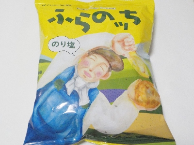

JAふらの「ふらのッち（のり塩）」
2024/08/13

小さくて柔らかいポテトチップだと思いました。
大きい口を開けたり、パリパリが当たって痛いなんてことはなく食べやすかったです。
海苔味と塩味がポテトとよく合っていて美味しかったです。
北海道富良野市朝日町3丁目1番
2024/08/13

小さくて柔らかいポテトチップだと思いました。
大きい口を開けたり、パリパリが当たって痛いなんてことはなく食べやすかったです。
海苔味と塩味がポテトとよく合っていて美味しかったです。